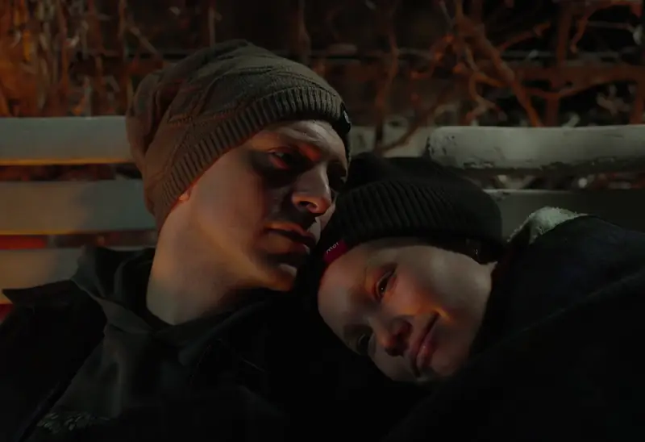
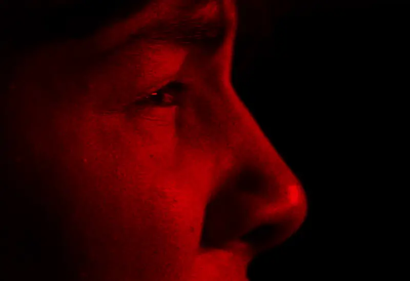
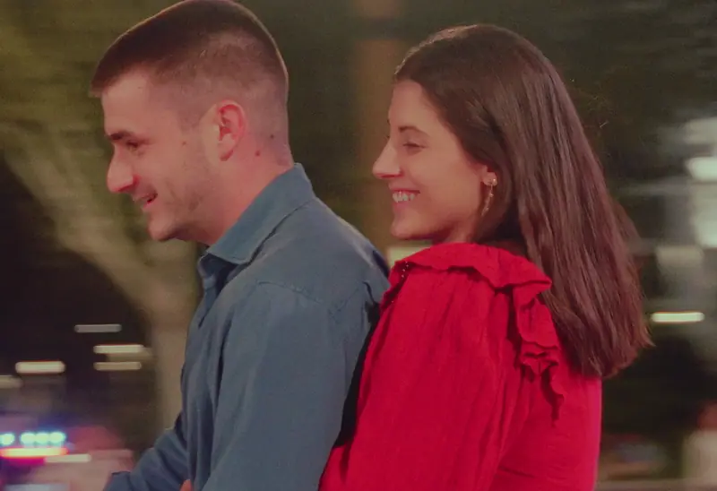
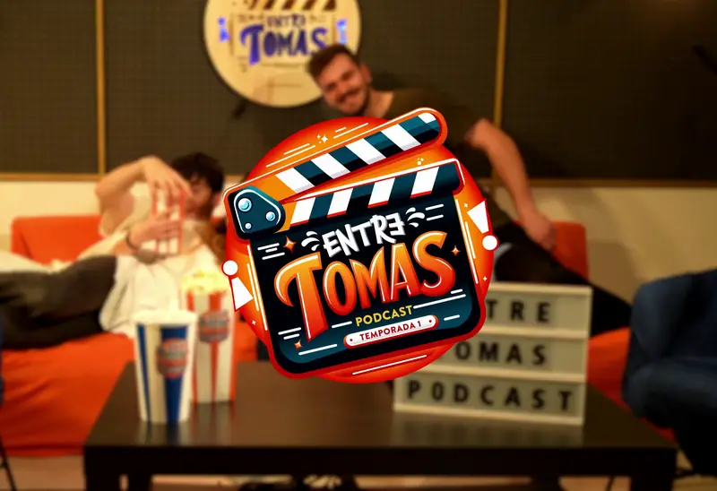
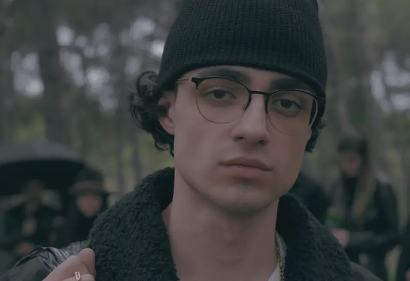
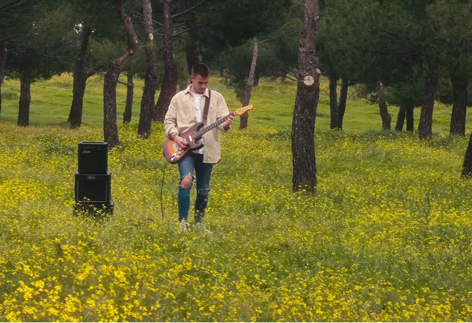
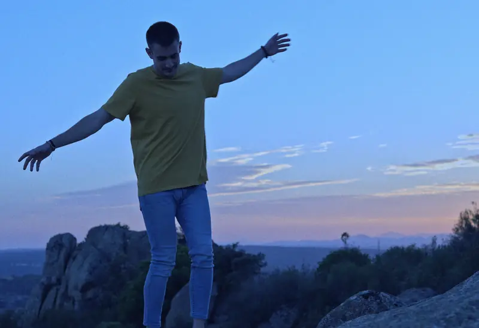

Boletín especial de noticias | Audiodrama

11 Miles | Cortometraje
Rober Marccu - 19 | Videoclip

Rober Marccu - Pura guerra | Videoclip

Entre Tomas | Podcast

Nick bb - Ginebra | Videoclip

Rober Marccu & Marina Sánchez - Nunca Imaginé | Videoclip
